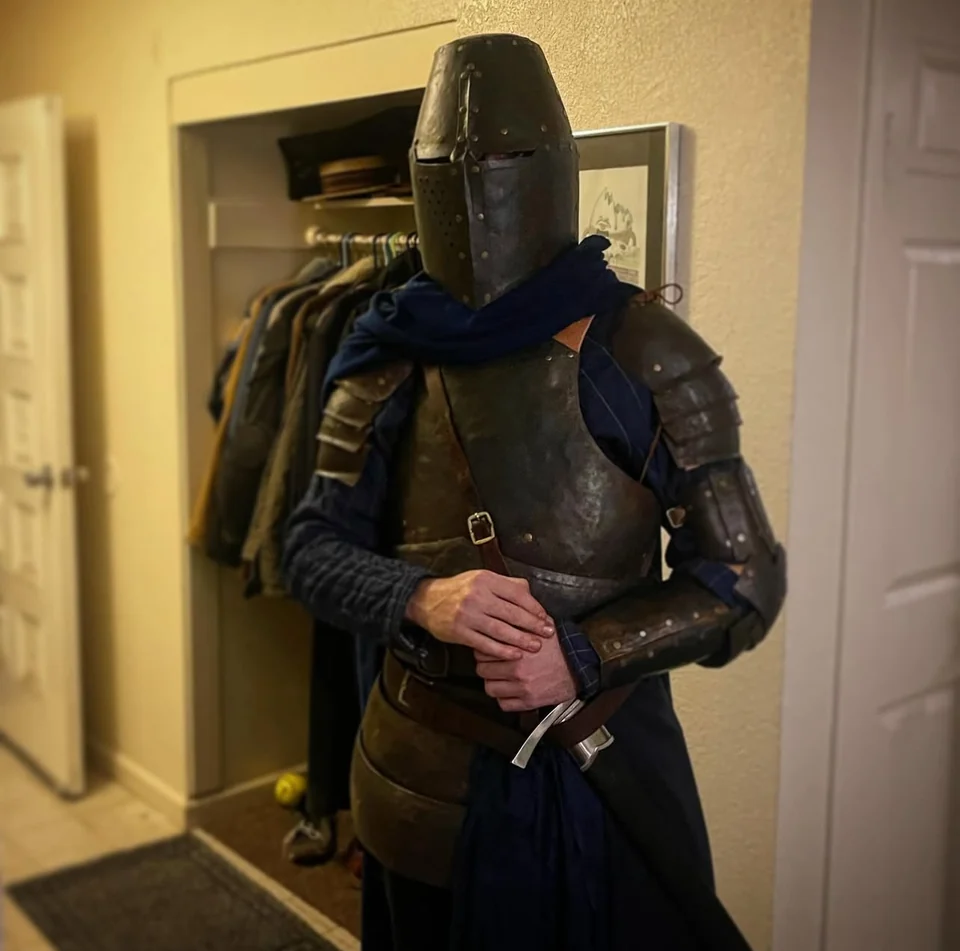
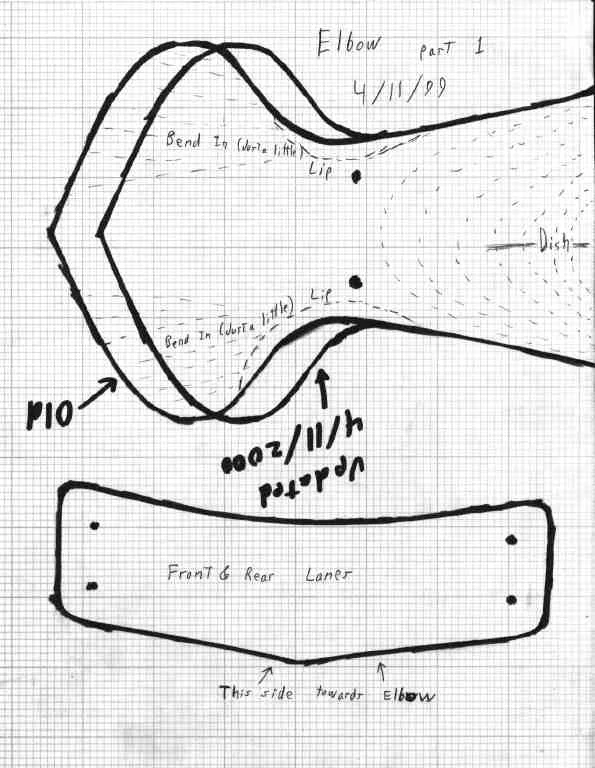
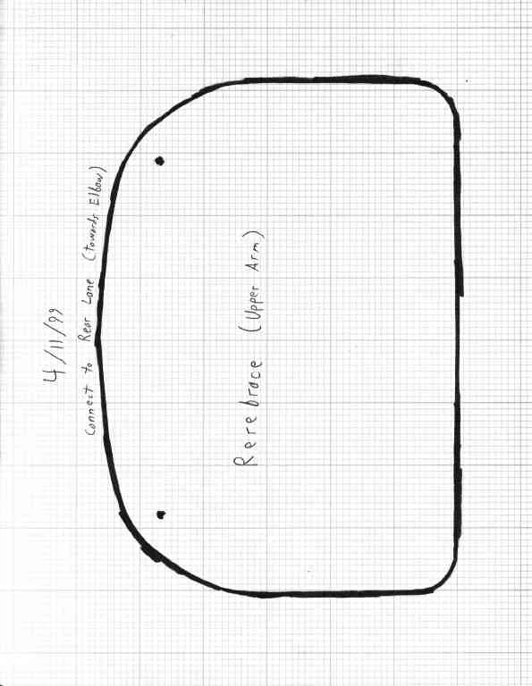
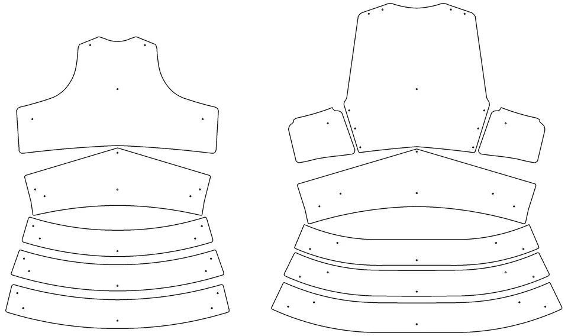
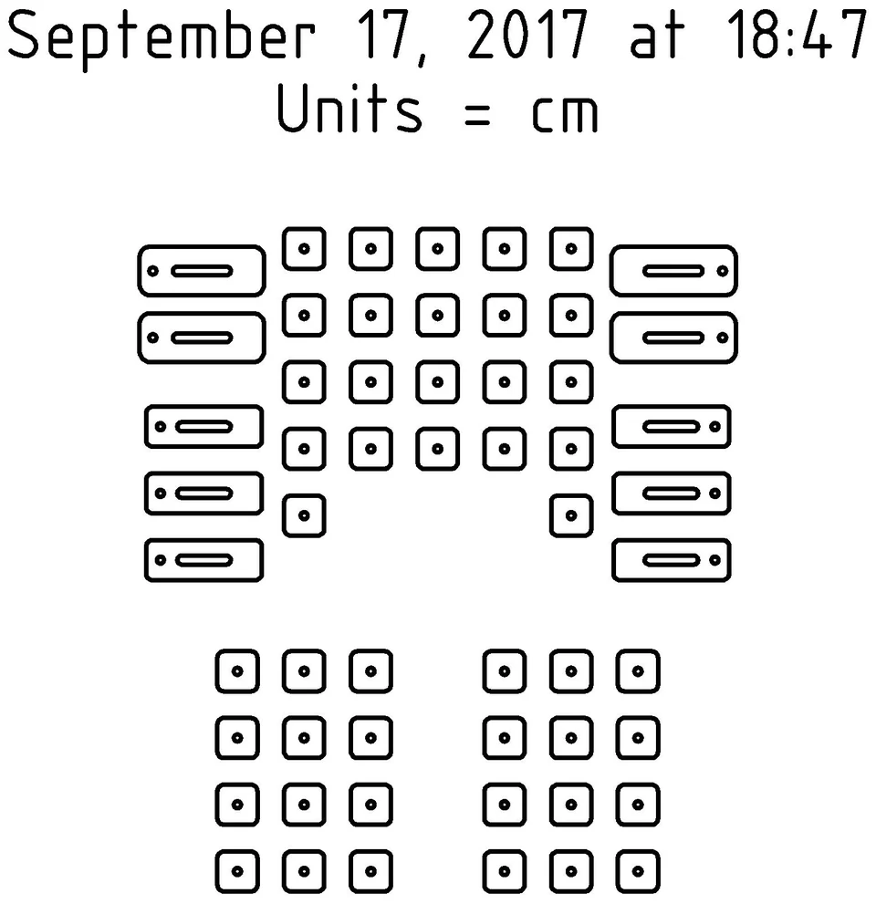
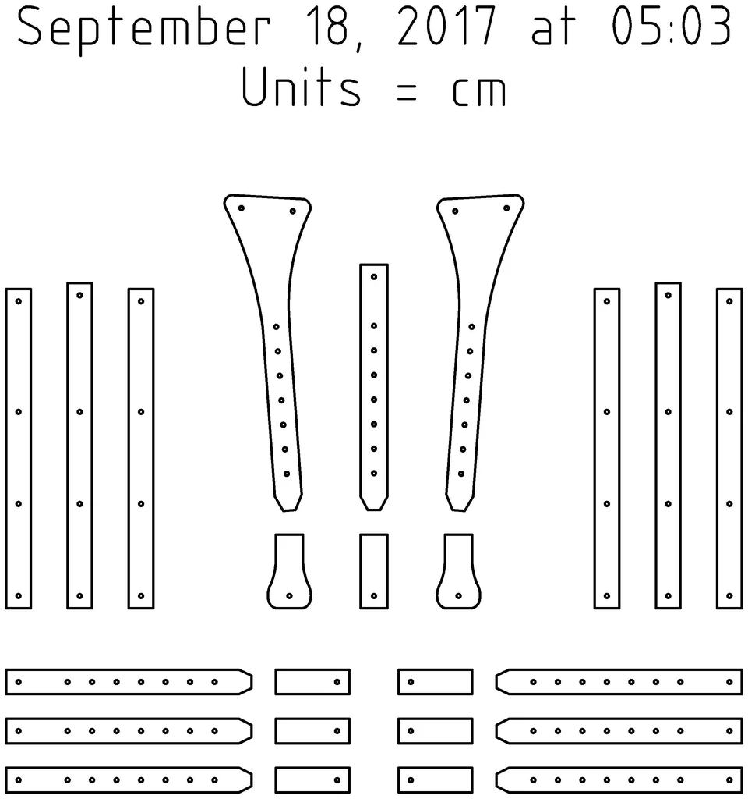

I built this Italian-inspired armor using Craig Nadler’s patterns. The first pieces came from an old filing cabinet; later additions included a gambeson, tabard, cape, and an asymmetrical pauldron.


Filing-cabinet steel
After destroying an old filing cabinet, I realized I could use the steel for armor. I flattened the panels and started making pieces with basic hand tools, teaching myself as I went.
I had already made a rough gambeson by taking apart a dress shirt for a pattern, tracing it onto blue fabric, and quilting it with batting. It worked, and its blue-and-white colors carried into the rest of the costume.
Patterns, plates, and straps
I used the patterns to lay out the plates and plan the straps and hardware.





Later additions
After the helmet, I made the arms and added a tabard to cover the gaps. Thrifted blue velvet became the cape.
Later, I added the chest and cuisses, a horseman’s pauldron, and a great helm crest. Dark Souls and Elden Ring influenced some of those choices.
Wearing it
I’ve called this suit finished more than once, then come back with another addition. I still wear it to the Ren Faire. It’s hot, sweaty work, but I love wearing it.